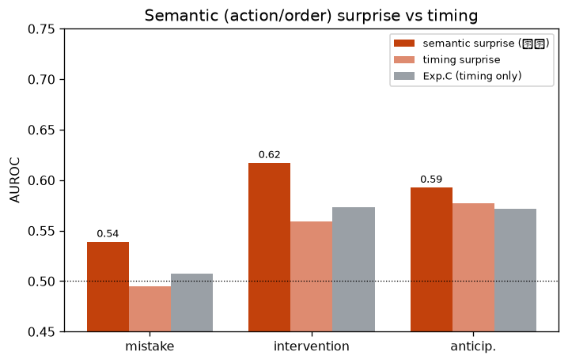
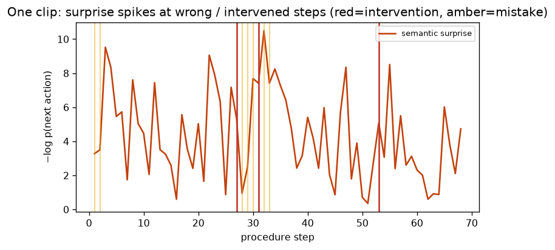

刃⑦ 手順失敗の事前検出（内容・順序の低尤度）★本命
実験Cの“タイミング”を“意味（次アクション・順序）”に置換。低尤度＝順序違反/ミスを事前に検出（HoloAssist）
0.539ミスAUROC
0.617介入AUROC
0.593予兆AUROC
0.539 / 0.508vs 実験C(ミス)
1. このデータは何か
HoloAssist オープン注釈（142k step, 1673クリップ）。各stepに行動コードa(1787)・対象コードn(48)・所要/間・ミス(Correct/Wrong)・指導者の介入。学習=train split、評価=val（held-out）。ミス率0.27 / 介入率0.034。
2. 何を・どう学習したか
実験Cの敗因＝『意味的ミスを“時間”軸で測った』を修正。GRUで履歴を条件づけ、p(次の行動a・対象n | これまでの手順) を学習し 意味サプライズ = −log p(実際の次アクション) を算出（＝場違い/順序違反ほど高い）。比較用にタイミングサプライズ（所要/間のガウス尤度＝Cと同型）も併走。
3. 結果
意味サプライズはミス検出 AUROC=0.539（実験Cのタイミング 0.508＝ほぼ勘、を明確に突破）。介入 0.617 / 予兆 0.593。タイミングサプライズは Cと同様に弱く（ミス 0.495）、『軸を時間→意味に移すと効く』という本命仮説が初めて検証された。

意味(行動・順序)サプライズ vs タイミング：ミス/介入/予兆のAUROC（灰=実験C）

1クリップの意味サプライズ（赤線=介入, 橙=ミス）
4. 図の見方
左＝3課題×手法のAUROC。橙(意味)が灰(実験C・時間のみ)を上回るほど、内容・順序の低尤度が失敗の信号になっている。右＝1クリップの意味サプライズ推移。赤線(介入)・橙線(ミス)の付近でスパイク＝順序違反を捉えている。
5. 解釈と意味・使い道
失敗シリーズ(A–E)の中核仮説『条件付き尤度が低い＝forget/mistakeポテンシャル』の“内容・順序”側面を、手元注釈だけで実証。次は工程DAG（順序違反の直接検出）と生ストリーム（手/視線＝HD-EPIC実験B）で強化。
条件付き Normalizing Flow（zuko NSF）で自動生成。
NF×生活データ探索シリーズの一部。